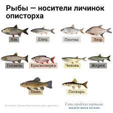

Рыбы (лат. Pisces) — обширная группа водных челюстноротых позвоночных животных, ранее считавшаяся надклассом. Рыбы характеризуются жаберным дыханием на всех этапах постэмбрионального развития организма.